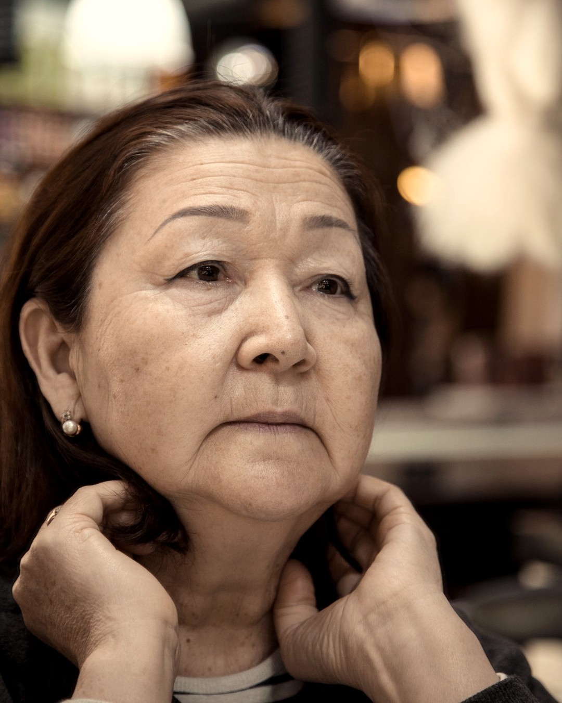
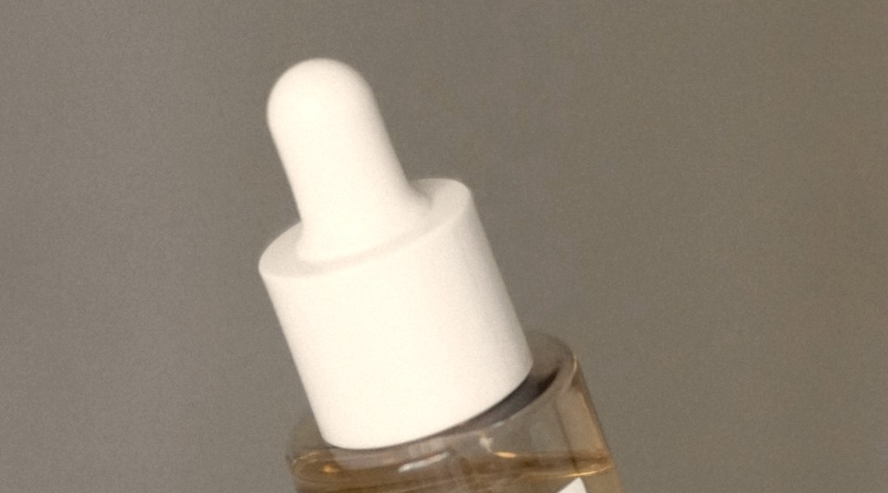

원칙 01 · 자외선
노화의 상당 부분은
나이가 아니라 빛이다
겉으로 보이는 피부 노화의 큰 몫은 누적된 자외선 탓으로 알려져 있다. 흐린 날, 실내 창가, 5분 외출도 전부 더해진다. 순서를 하나만 정한다면 이게 첫 번째다.
핵심 성분
징크옥사이드티타늄디옥사이드
실천
아침 한 번은 SPF30 · PA+++ 이상을 무조건.
오래 사는 건 이미 정해졌다.
어떻게 나이 들지가 남았다.

젊게 사는 건
어려 보이는 게 아니라,
오래 쓸 몸을 관리하는 것이다.
한국인 기대수명은 이미 80대 중반. 50세는 반환점이 아니라 후반전의 시작점이다. 노화 자체는 막을 수 없지만, 속도는 조절된다.
겉으로 보이는 피부 노화의 큰 몫은 누적된 자외선 탓으로 알려져 있다. 흐린 날, 실내 창가, 5분 외출도 전부 더해진다. 순서를 하나만 정한다면 이게 첫 번째다.
아침 한 번은 SPF30 · PA+++ 이상을 무조건.

04 / 08나이가 들면 피부가 얇아지고 유분 분비가 줄어 수분이 새어 나간다. 장벽이 무너지면 주름도 색소도 자극도 다 빨라진다. 비싼 기능성보다 장벽이 먼저다.
히알루론산은 물기 남은 피부에 바르고, 위에 유분으로 덮어 가둔다.
한 번 자리 잡은 색소는 바르는 것만으로 잘 빠지지 않는다. 현실적인 목표는 새로 만들어지는 속도를 늦추는 것. 기대치를 바꾸면 관리가 꾸준해진다.
최소 8~12주 연속. 2~3주 쓰고 바꾸면 매번 처음부터 다시 시작하는 셈이다.
진피 콜라겐은 20대 후반부터 해마다 약 1%씩 줄어든다고 알려져 있고, 폐경 전후로 감소가 더 가팔라진다. 그래서 40대 이후 탄력 관리의 목표는 되돌리기가 아니라 감속이다.
레티놀은 저농도부터, 밤에만, 자외선차단과 반드시 함께.
근육은 30대 이후 10년마다 3~8%씩 줄어든다. 그런데 피부와 달리 근육은 지금 시작해도 다시 늘어난다. 백세시대의 '젊음'을 가장 크게 좌우하는 건 얼굴이 아니라 다리다.
주 2회 근력 운동 + 매일 20분 걷기. 이게 어떤 앰플보다 확실하다.
성분 이름을 외울 필요는 없다. 뒷면 성분표에서 이 다섯 줄만 찾을 수 있으면 된다.
일반적인 정보 제공이며 개인의 피부·건강 상태에 따라 결과는 다를 수 있습니다. 질환이 있거나 복용 중인 약이 있다면 전문가와 상의하세요.